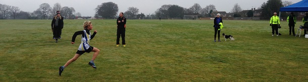

The sixth race in the Kent Fitness League Cross Country series took place in Blean Woods, Rough Common on Sunday February 5th on a 5-mile course around the playing fields and footpaths of Blean Wood Country Park, writes Jim Knight.
Running conditions were dryer than normal on the playing fields, but muddy and slippery on the twisting trails through the woods.
With some of our fastest runners injured, Sevenoaks AC fielded a slightly depleted team of just 17 senior athletes, but put in some excellent performances.
The men's race was comfortably won by Ed Bovingdon of Istead & Ifield Harriers in 29 minutes 37, his fourth win in the series, and the women's race by Sarah Shepherd of Paddock Wood, in 34.41.
Andrew Hutchinson led the Sevenoaks team home with his best performance ever, coming 23rd out of the 293 runners. Andrew's training with the club is clearly paying dividends as he has improved from 103rd in the first race of the series to a club-leading performance in Blean Woods.
Lee Lintern was the club's second finisher in 31st place.
Chris Desmond had a great run, finishing in 36th place, (2nd M50) with James Baker just behind, in 37th (3rd M50).
There were excellent scoring performances from Dan Witt (54th), Mike McCarthy (65th), Andy Evans (110th), and John Denyer (114th). John Denyer was 2nd M65, Jim Fitzmaurice 1st M70 and Richard Pitcairn-Knowles 1st M80
In the women's race, Cath Linney led the Sevenoaks team home in 6th place (1st W45), followed by Heather Fitzmaurice (14th overall & 5th W45), Pauline Dalton (23rd overall & 2nd W50), and Sally Shewell (31st overall & 3rd W55).
Dartford Harriers won the men's team competition followed by Canterbury Harriers, and also the women's competition, ahead of Petts Wood Runners.
Sevenoaks came 4th in both the men's and women's competitions and have retained their place in 4th position for the combined team after 6 races.
The SAC results were:
| Ov Pos | Lg Pos | Runner | Age | Time | Club | Rating | # Races |
|---|---|---|---|---|---|---|---|
| 23 | 23 | Andrew Hutchinson | 37 | 33:20 | Sevenoaks AC | 89.72 | 2 |
| 31 | 31 | Lee Lintern | 36 | 33:49 | Sevenoaks AC | 85.98 | 24 |
| 36 | 36 | Chris Desmond | 53 | 34:13 | Sevenoaks AC | 83.64 | 78 |
| 37 | 37 | James Baker | 52 | 34:17 | Sevenoaks AC | 83.18 | 15 |
| 54 | 52 | Daniel Witt | 42 | 35:20 | Sevenoaks AC | 76.17 | 39 |
| 65 | 63 | Michael McCarthy | 51 | 36:04 | Sevenoaks AC | 71.03 | 20 |
| 95 | 6 | Cath Linney | 47 | 37:56 | Sevenoaks AC | 93.67 | 26 |
| 110 | 101 | Andy Evans | 46 | 38:44 | Sevenoaks AC | 53.27 | 34 |
| 114 | 104 | John Denyer | 68 | 38:53 | Sevenoaks AC | 51.87 | 44 |
| 120 | 108 | Peter Ash | 47 | 39:13 | Sevenoaks AC | 50.00 | 8 |
| 123 | 14 | Heather Fitzmaurice | 47 | 39:23 | Sevenoaks AC | 83.54 | 63 |
| 139 | 23 | Pauline Dalton | 52 | 40:17 | Sevenoaks AC | 72.15 | 37 |
| 173 | 31 | Sarah Shewell | 57 | 42:34 | Sevenoaks AC | 62.03 | 95 |
| 182 | 149 | Robert Evans | 42 | 43:15 | Sevenoaks AC | 30.84 | 2 |
| 196 | 38 | Kim Pegg | 34 | 43:59 | Sevenoaks AC | 53.16 | 3 |
| 228 | 179 | James Fitzmaurice | 74 | 47:04 | Sevenoaks AC | 16.82 | 60 |
| 292 | 214 | Richard Pitcairn-Knowles | 84 | 1:05:01 | Sevenoaks AC | 0.47 | 16 |
The full results are here.

Six Sevenoaks AC runners ran in the Junior race with Ollie Armes and Verner Krynauw (pictured) leading the boys home and Julia Sackville-West first home for the Club in the girls race.
The final race of the 2016/17 series will be on Sunday February 19th at Fowlmead, Deal, starting at 11 am.
The Kent Fitness League is a series of cross-country races between the 18 registered Athletics Clubs in Kent. Any number of club members can compete, but 12 are needed to score in the senior team competition – 8 men (of whom two must be V50 and one V40) and 4 women (of whom one must be V45 and one V35).